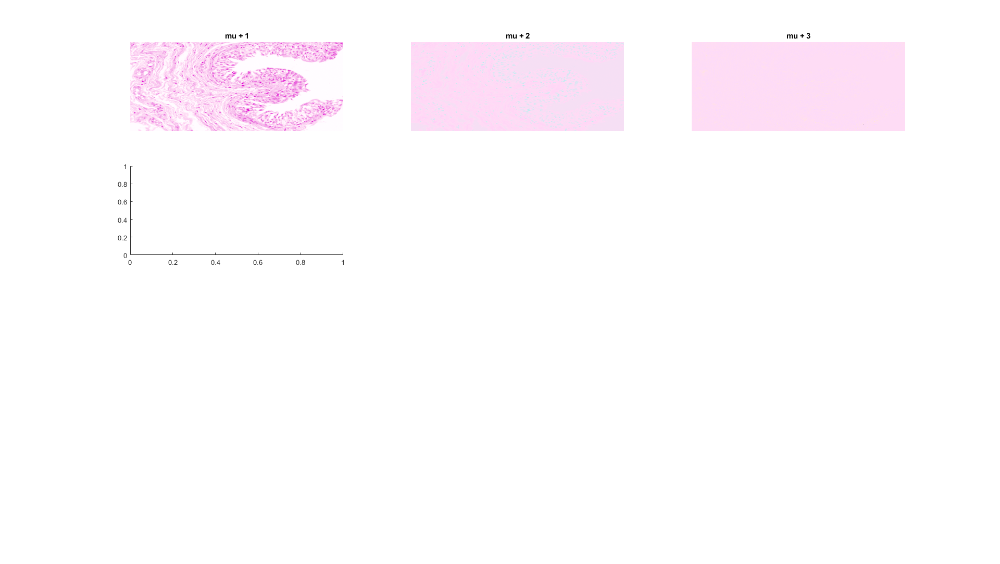
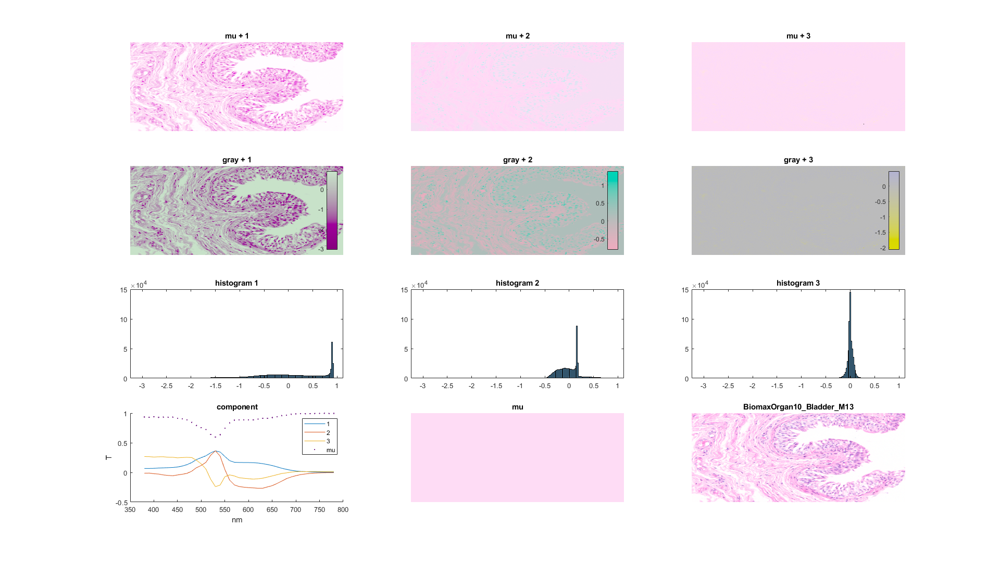
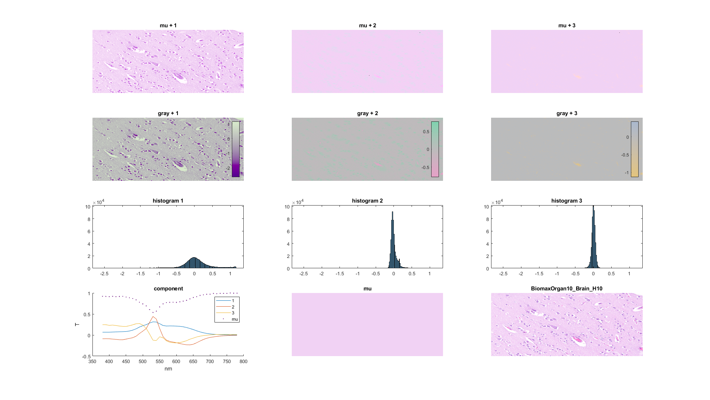
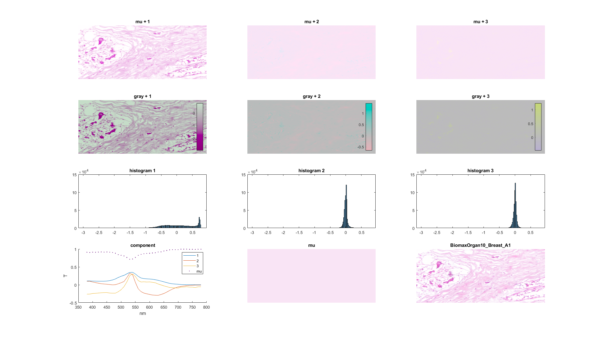
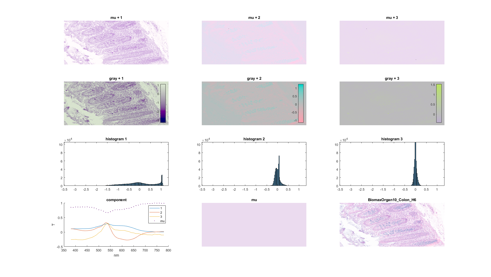
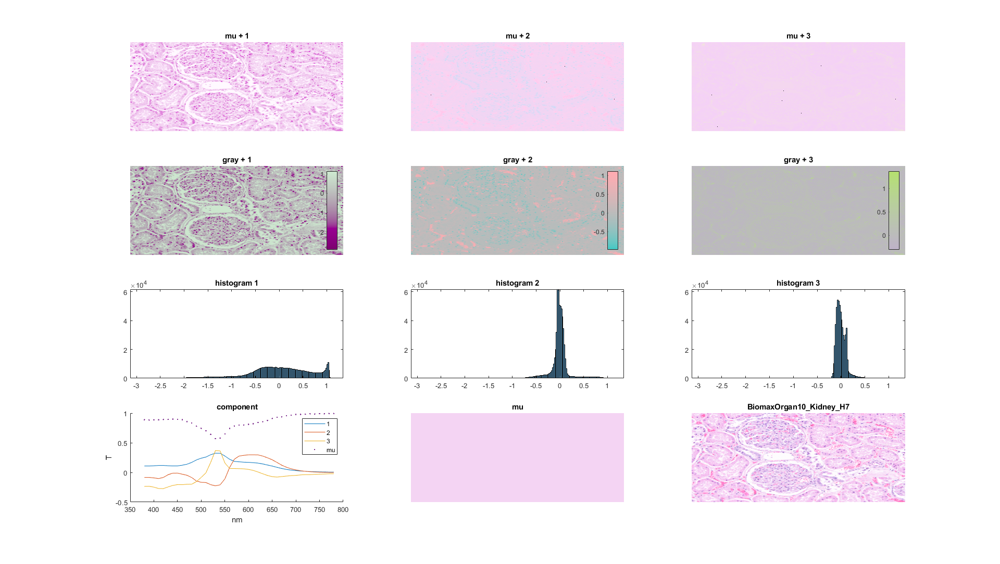
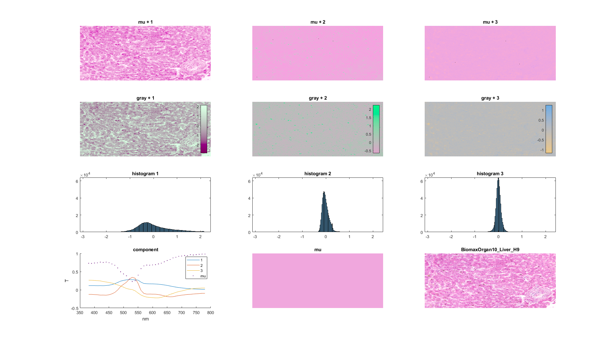
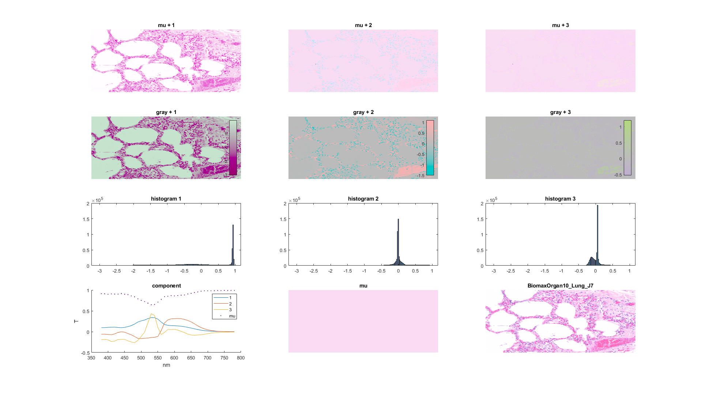
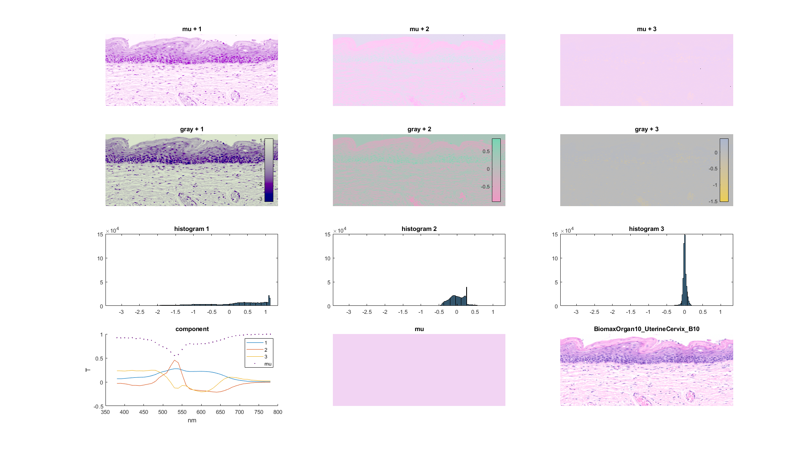

Contents
PCA of spectral transmittance WCC 4-11-2020: add colormap 4-8-2020: using Paul's data
function mypca for i=1:8 mypca_do(i) snapnow end end function mypca_do (organ_id)
TOY = 0; % use small image for debugging if TOY ~= 1 WCC = 1 % data paths switch organ_id case 1 organ_name = 'BiomaxOrgan10_Bladder_M13' case 2 organ_name = 'BiomaxOrgan10_Brain_H10' case 3 organ_name = 'BiomaxOrgan10_Breast_A1' case 4 organ_name = 'BiomaxOrgan10_Colon_H6' case 5 organ_name = 'BiomaxOrgan10_Kidney_H7' case 6 organ_name = 'BiomaxOrgan10_Liver_H9' case 7 organ_name = 'BiomaxOrgan10_Lung_J7' case 8 organ_name = 'BiomaxOrgan10_UterineCervix_B10' end if WCC == 1 transName_path = ['C:\Users\wcc\Desktop\paul data wsi\Data\ProcessedData\031320\' organ_name '\Transmittance\']; imgTruthName_path = ['C:\Users\wcc\Desktop\paul data wsi\Data\ProcessedData\031320\' organ_name '\EndResults\']; cied65_path = 'C:\Users\wcc\Documents\GitHub\paulcode\input\DataIlluminants\'; end % File names transName = [transName_path 'trans_mean_camera']; imgTruthName = [imgTruthName_path 'truth.tif']; % image size ncol = 844; nrow = 676; % Load Paul's data files load(transName,'trans_array_m'); % trans_array_m is 41x570544 % data is 570544x41 data = trans_array_m'; else
use Toy data
ncol = 200;
nrow = 200;
load('toy','data')
organ_name = 'Toy'
imgTruthName = ['toy.png'];
end
WCC =
1
organ_name =
'BiomaxOrgan10_Bladder_M13'
WCC =
1
organ_name =
'BiomaxOrgan10_Brain_H10'
WCC =
1
organ_name =
'BiomaxOrgan10_Breast_A1'
WCC =
1
organ_name =
'BiomaxOrgan10_Colon_H6'
WCC =
1
organ_name =
'BiomaxOrgan10_Kidney_H7'
WCC =
1
organ_name =
'BiomaxOrgan10_Liver_H9'
WCC =
1
organ_name =
'BiomaxOrgan10_Lung_J7'
WCC =
1
organ_name =
'BiomaxOrgan10_UterineCervix_B10'
data conditioning --
huge difference in PCA!!!
drange_scale = 0.01; % remove noisy 380 nm % by reducing magnitude % while keeping randomness drange1 = min(data(:,1)); drange2 = max(data(:,1)); data(:,1) = data(:,2) + data(:,1) / (drange2-drange1) * drange_scale; % remove noise 780 nm % by reducing magnitude % while keeping randomness drange1 = min(data(:,end)); drange2 = max(data(:,end)); data(:,end) = data(:,end-1) + data(:,end) / (drange2-drange1) * drange_scale; % trim to [0,1] data(data < 0) = 0; data(data > 1) = 1;
Principal Component Analysis
great tutorial: http://www.cs.otago.ac.nz/cosc453/student_tutorials/principal_components.pdf Matlab pca(): https://www.mathworks.com/help/stats/pca.html
% % Matlab pca % [coeff,score,latent,tsquared,explained,mu] = pca(data); % subplot layout sprow = 4; spcol = 3; clf % color conversion library cc = ColorConversionClass; % % first row: show mu + i % for i = 1:3 subplot(sprow,spcol,i) % score of the i-th pixel sco = score(:,i); sco_kx41 = repmat(sco,1,41); % the i-th component comp = coeff(:,i); comp_kx41 = repmat(comp',size(sco,1),1); % the mean mu_kx41 = repmat(mu,size(sco,1),1); % the transmittance including mean trans_kx41 = comp_kx41 .* sco_kx41 + mu_kx41; % light source spd_d65 = cc.spd_d65; spd_d65_kx41 = repmat(spd_d65',size(sco,1),1); % transmittance and light source combined spd_kx41 = trans_kx41 .* spd_d65_kx41; % SPD to CIEXYZ xyz_target = cc.spd2XYZ(spd_kx41'); xyz_d65 = cc.spd2XYZ(spd_d65); % CIEXYZ to CIELAB lab = cc.XYZ2lab(xyz_target,xyz_d65); lab2 = reshape(lab,nrow,ncol,3); % CIELAB to sRGB rgb = uint8(lab2rgb(lab)*255); % 1D to 2D rgb2 = reshape(rgb,nrow,ncol,3); % show image image(rgb2) title(sprintf('mu + %d',i)) axis off end % % second row: % show heatmaps of the first 3 components % % for different colormaps of subplots % for some reason, colormap() needs to be done outside the loop % the colormaps are saved in mycmap, the subplots in ax mysco_n = 100; % number of colors in colormap mycmap = zeros(3,mysco_n,3); for i = 1:3 ax(i) = subplot(sprow,spcol,1*spcol+i); % the score for each pixel -- 1D and 2D pixelscore1 = score(:,i); pixelscore2 = reshape(pixelscore1,nrow,ncol); % find the range of the scores pixelscore_min = min(pixelscore1); pixelscore_max = max(pixelscore1); mysco = [pixelscore_min:(pixelscore_max-pixelscore_min)/(mysco_n-1):pixelscore_max]'; mycolormap = create_colormap(coeff(:,i),mysco); mycmap(i,:,:) = mycolormap; imagesc(pixelscore2) colorbar('east') axis off title(sprintf('gray + %d',i)) end for i=1:3 colormap(ax(i),squeeze(mycmap(i,:,:))) end % % third row: show histograms % lim_array = zeros(3,4); nbin = 200; edge_min = min(score(:,1:3)); edge_max = max(score(:,1:3)); edge = [edge_min : (edge_max-edge_min)/nbin : edge_max]; for i = 1:3 subplot(sprow,spcol,2*spcol+i) histogram(score(:,i),edge) lim = axis; lim_array(i,:) = lim; title(sprintf('histogram %d',i)) end % adjust axis axislim = [min(lim_array(:,1)) max(lim_array(:,2)) min(lim_array(:,3)) max(lim_array(:,4))]; for i = 1:3 subplot(sprow,spcol,2*spcol+i) axis(axislim) end % % fourth row, column 1: show spectra % subplot(sprow,spcol,sprow*spcol-2) hold on plot(380:10:780,coeff(:,1)) plot(380:10:780,coeff(:,2)) plot(380:10:780,coeff(:,3)) plot(380:10:780,mu,'.') xlabel('nm') ylabel('T') legend('1','2','3','mu') title('component') % % fourth row, column 2: show background; duplicated from first row % subplot(sprow,spcol,sprow*spcol-1) mu_kx41 = repmat(mu,size(sco,1),1); trans_kx41 = mu_kx41; spd_d65 = cc.spd_d65; spd_d65_kx41 = repmat(spd_d65',size(sco,1),1); spd_kx41 = trans_kx41 .* spd_d65_kx41; xyz_target = cc.spd2XYZ(spd_kx41'); xyz_d65 = cc.spd2XYZ(spd_d65); lab = cc.XYZ2lab(xyz_target,xyz_d65); lab2 = reshape(lab,nrow,ncol,3); rgb = uint8(lab2rgb(lab)*255); rgb2 = reshape(rgb,nrow,ncol,3); image(rgb2) title(sprintf('mu')) axis off % % fourth row, column 3: show the RGB truth image % subplot(sprow,spcol,sprow*spcol) imgTruth = imread(imgTruthName); image(imgTruth) % axis image axis off % colorbar title(organ_name,'Interpreter','none') % figure % for i=1:9 % subplot(3,3,i) % eigenvector2rgb(mu',coeff(:,i)) % title([i]) % end return
end
 create a colormap
function rgb = create_colormap (trans, sco) cc = ColorConversionClass; % light source spd_white = cc.spd_d65 * 1; spd_white_kx41 = repmat(spd_white',size(sco,1),1); % the score sco_kx41 = repmat(sco,1,41); % the component comp = trans; comp_kx41 = repmat(comp',size(sco,1),1); % the transmittance _change_ for each pixel % use 50% gray as the background % because 18%, meant for lightness, is too low in transmittance domain gray = 0.50; trans_kx41 = comp_kx41 .* sco_kx41 + gray; % spd for each pixel spd_kx41 = trans_kx41 .* spd_white_kx41; % xyz for each pixel xyz_target = cc.spd2XYZ(spd_kx41'); % xyz for reference white xyz_d65 = cc.spd2XYZ(spd_white); % lab for each pixel lab = cc.XYZ2lab(xyz_target,xyz_d65); % sRGB for each pixel % notice that colormap requires range of [0,1] rgb = lab2rgb(lab); % trim to [0,1] rgb = max(rgb,0); rgb = min(rgb,1); end       